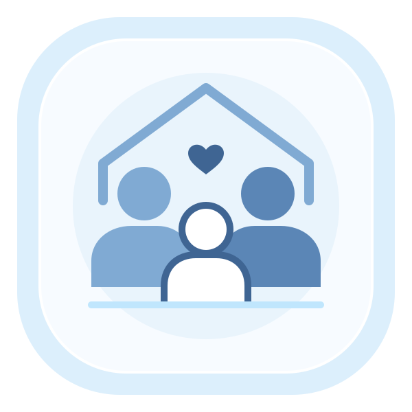

Ближе друг к другу
Даже когда всё меняется
Статьи, разборы семейных ситуаций и упражнения, чтобы лучше понимать подростка и находить слова для спокойного разговора.

С чего начнём?
Нажмите на карточку — мы покажем нужный раздел.
Не нужно знать все ответы
В подростковом возрасте растёт потребность в самостоятельности. Разногласия не обязательно означают потерю близости. Начните с небольших, последовательных шагов.
Разобраться в главном
Короткие материалы с практическими рекомендациями. Выберите тему и откройте статью.
Что делать, если…
Выберите ситуацию. Получите план действий, полезные фразы и признаки, когда нужна дополнительная помощь.
Упражнения для семьи
Начните с одного упражнения, которое подходит вашей семье. Предложите попробовать вместе в спокойное время. У каждого есть право отказаться или сделать паузу.
Как я общаюсь с подростком?
Небольшая рефлексия о привычках общения. Это не психологический тест, не диагностика и не оценка «хорошего родителя».
Когда нужна помощь специалиста
Не обязательно ждать кризиса, чтобы обратиться к школьному психологу, педагогу-психологу, семейному психологу или врачу.
Телефон доверия для детей и родителей
Когда трудно справиться с переживаниями или найти общий язык, можно поговорить с психологом. Бесплатно и анонимно по России.
8 800 2000 122С мобильного или стационарного телефона.
124Короткий номер для звонков с мобильного.
О службе ↗Обратитесь за консультацией
Если конфликты повторяются, подросток перестал посещать занятия, резко изменились сон или настроение, появились признаки травли, употребления веществ или устойчивого избегания общения.
Как начать обращение
«Я замечаю изменения в поведении ребёнка и хочу понять, как безопасно его поддержать. Подскажите, с чего начать и к какому специалисту обратиться».
Материалы носят информационный характер и не заменяют индивидуальную консультацию. При подозрении на насилие безопасность ребёнка важнее сохранения семейной тайны.
ПРОподростка
Цифровая методичка для родителей, которые хотят понимать возрастные изменения, укреплять доверие и конструктивно реагировать на трудности подросткового возраста.
Цель проекта — сделать базовые психолого-педагогические рекомендации доступными и применимыми в повседневной жизни семьи.